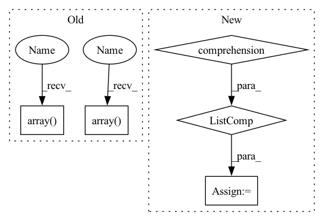

Pattern ID :25891
Before Change
width = self.size
frames = [
np.array( Image.fromarray(f).resize((width, height), Image.BILINEAR)) for f in frames
]
masks = [
np.array( Image.fromarray(m).resize((width, height), Image.NEAREST)) for m in masks
]
// TODO: optical_flows
return frames, masks, optical_flowsAfter Change
masks = [
cv2.resize(m, dsize=(width, height), interpolation=cv2.INTER_NEAREST) for m in masks
]
optical_flows = [
cv2.resize(of, dsize=(width, height), interpolation=cv2.INTER_LINEAR) * scale
for of in optical_flows
]
return frames, masks, optical_flows
class RandomCrop(object):In pattern: SUPERPATTERN
Frequency: 5
Non-data size: 5
Instances Fragment ID: 78260155
Project Name: hzxie/rmnet
Commit Name: e7c2acab328bc517a7d31ea78d9cff93fc3bef42
Time: 2020-08-07
Author: root@haozhexie.com
File Name: utils/data_transforms.py
M Class Name: Resize
N Class Name: Resize
M Method Name: __call__(4)
N Method Name: __call__(4)
M Parent Class: object
N Parent Class: object
M File Name: utils/data_transforms.py
N File Name: utils/data_transforms.py
M Start Line: 138
M End Line: 148
N Start Line: 342
N End Line: 350
Before Change
if isinstance(obs[first_env_id][first_agent_id], (list, np.ndarray)):
observations_placeholder = np.stack(
[
np.array( [obs[env_id][agent_id] for agent_id in agent_ids])
for env_id in range(num_envs)
],
axis=0,
)
tensor_feed.add_data(
name=f"{_OBSERVATIONS}" + suffix,
data=observations_placeholder,
save_copy_and_apply_at_reset=True,
)
elif isinstance(obs[first_env_id][first_agent_id], dict):
for key in obs[first_env_id][first_agent_id]:
observations_placeholder = np.stack(
[
np.array( [obs[env_id][agent_id][key] for agent_id in agent_ids])
for env_id in range(num_envs)
],
axis=0,
)After Change
tensor_feed = DataFeed()
num_envs = env_wrapper.n_envs
obs = [env_wrapper.obs_at_reset() for _ in range(num_envs)]
assert len(obs) == num_envs
first_env_id = 0
// Push observations to the device Fragment ID: 78260152
Project Name: salesforce/warp-drive
Commit Name: 0433121531b751f4a4d3ebbeed2aa9495d9d4b47
Time: 2022-02-07
Author: sunil.srinivasa@salesforce.com
File Name: warp_drive/training/utils/data_loader.py
M Class Name: AnonimousClass
N Class Name: AnonimousClass
M Method Name: _create_and_push_data_placeholders_helper(5)
N Method Name: _create_and_push_data_placeholders_helper(5)
M Parent Class:
N Parent Class:
M File Name: warp_drive/training/utils/data_loader.py
N File Name: warp_drive/training/utils/data_loader.py
M Start Line: 150
M End Line: 282
N Start Line: 200
N End Line: 337
Before Change
else:
cls=2//covid
print(np.sum(np.array( cls) ==0),np.sum(np.array( cls) ==1),np.sum(np.array(cls)==2))
def __len__(self):
return len(self.data)After Change
cls.append(2)
else:
cls.append(3)//covid
nums= [np.sum(np.array(cls)==i) for i in range(max(cls)+1)]
print(nums)
def __len__(self):
return len(self.data) Fragment ID: 78260153
Project Name: chenwwweixiang/opencoviddetector
Commit Name: d2ebb8118b3c443395ccaa9e0640c73464527fc9
Time: 2020-04-08
Author: chenwx_thu@foxmail.com
File Name: data/dataset.py
M Class Name: NCPJPGDataset
N Class Name: NCPJPGDataset
M Method Name: __init__(6)
N Method Name: __init__(6)
M Parent Class: Dataset
N Parent Class: Dataset
M File Name: data/dataset.py
N File Name: data/dataset.py
M Start Line: 201
M End Line: 209
N Start Line: 170
N End Line: 212
Before Change
width = self.size
frames = [
np.array( Image.fromarray(f).resize((width, height), Image.BILINEAR)) for f in frames
]
masks = [
np.array( Image.fromarray(m).resize((width, height), Image.NEAREST)) for m in masks
]
// TODO: optical_flows
return frames, masks, optical_flowsAfter Change
masks = [
cv2.resize(m, dsize=(width, height), interpolation=cv2.INTER_NEAREST) for m in masks
]
optical_flows = [
cv2.resize(of, dsize=(width, height), interpolation=cv2.INTER_LINEAR) * scale
for of in optical_flows
]
return frames, masks, optical_flows
class RandomCrop(object): Fragment ID: 78260159
Project Name: hzxie/rmnet
Commit Name: e7c2acab328bc517a7d31ea78d9cff93fc3bef42
Time: 2020-08-07
Author: root@haozhexie.com
File Name: utils/data_transforms.py
M Class Name: Resize
N Class Name: Resize
M Method Name: __call__(4)
N Method Name: __call__(4)
M Parent Class: object
N Parent Class: object
M File Name: utils/data_transforms.py
N File Name: utils/data_transforms.py
M Start Line: 138
M End Line: 148
N Start Line: 342
N End Line: 350
Before Change
groundtruth_dict = {}
groundtruth_dict["groundtruth_boxes"] = [
labels[:,
1:] if len(labels) > 0 else np.array( [], dtype=np.float32)
for labels in annotations
]
groundtruth_dict["groundtruth_classes"] = [
labels[:, 0] if len(labels) > 0 else np.array( [], dtype=np.float32)
for labels in annotations
]
// bboxes = [label[:, 1:] for label in annotations]
// scores = [label[:, 0] for label in annotations]After Change
self.data_source.get_ann_info(idx)["labels"]
for idx in range(len(results["img_metas"]))
]
groundtruth_dict["groundtruth_is_crowd"] = [
self.data_source.get_ann_info(idx)["groundtruth_is_crowd"]
for idx in range(len(results["img_metas"]))
]
for evaluator in evaluators:
eval_result.update(evaluator.evaluate(results, groundtruth_dict))
Fragment ID: 78260163
Project Name: alibaba/easycv
Commit Name: 9a3826f0d21bea085e5c401ac7227fe1df69040a
Time: 2022-04-21
Author: 30484308+Cathy0908@users.noreply.github.com
File Name: easycv/datasets/detection/raw.py
M Class Name: DetDataset
N Class Name: DetDataset
M Method Name: evaluate(4)
N Method Name: evaluate(4)
M Parent Class: BaseDataset
N Parent Class: BaseDataset
M File Name: easycv/datasets/detection/raw.py
N File Name: easycv/datasets/detection/raw.py
M Start Line: 36
M End Line: 46
N Start Line: 60
N End Line: 72
Before Change
results = self._self_bleu(generate_corpus=generate_corpus)
for n_gram in self.n_grams:
bleu_dict["self-bleu-{}".format(n_gram)].append(np.array( results["self-bleu-{}".format(n_gram)]) .mean())
bleu_dict["self-bleu-{}-avg".format(n_gram)].append(
np.array( results["self-bleu-{}-avg".format(n_gram)]) .mean()
)
return bleu_dict
After Change
self_bleu = SelfBLEU(generate_corpus, dict(zip(self.ngrams, self.ngram_weights)))
scores = self_bleu.get_score()
for ngram in self.ngrams:
results[ngram] = [s * 100 for s in scores[ngram]]
return results
Fragment ID: 78260161
Project Name: rucaibox/textbox
Commit Name: 77528d404f00a41f10850cdfc9676d40c1362f46
Time: 2022-07-13
Author: 1020139164@qq.com
File Name: textbox/evaluator/selfbleu_evaluator.py
M Class Name: SelfBleuEvaluator
N Class Name: SelfBleuEvaluator
M Method Name: _calc_metrics_info(3)
N Method Name: _calc_metrics_info(3)
M Parent Class: AbstractEvaluator
N Parent Class: AbstractEvaluator
M File Name: textbox/evaluator/selfbleu_evaluator.py
N File Name: textbox/evaluator/selfbleu_evaluator.py
M Start Line: 68
M End Line: 80
N Start Line: 34
N End Line: 45